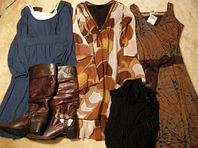

|
■2007/02/02/(Fri)20:34
ワンピース〜
|

なんだかんだでここ最近3着ほどワンピース買ってみましたー。セール期間とゆーのもあってみんな3,000円〜5,000円ぐらい。
ついでに買ったブーツは1,000円だったよ。いいんですかねホントにもー。
安い洋服買うと、「これ○○円だったんだよー」と言いふらしたくなるのですが、そーゆーことってオトナがしちゃいけないことなのかしら？
なんかシブーい顔する方がたまにいて、どきどきしてしまうのでした。
ダメなのかなぁ〜？
|
|
|